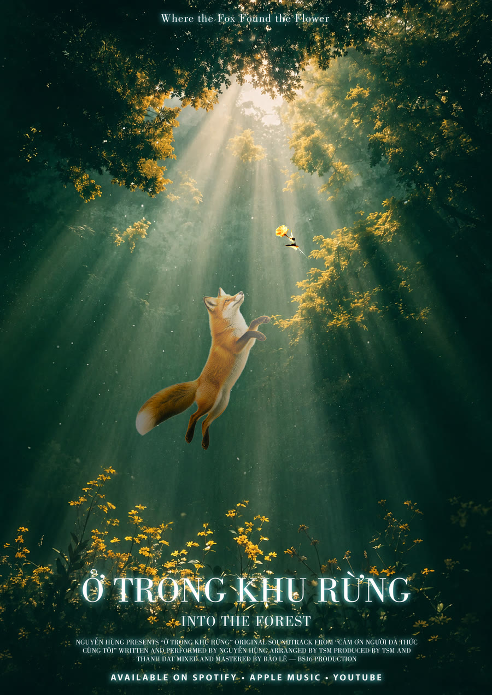
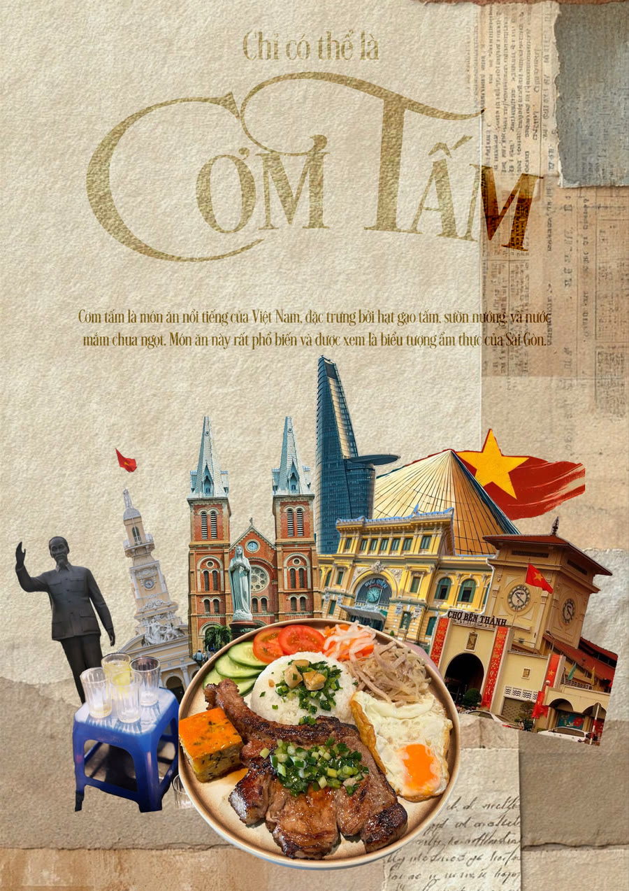
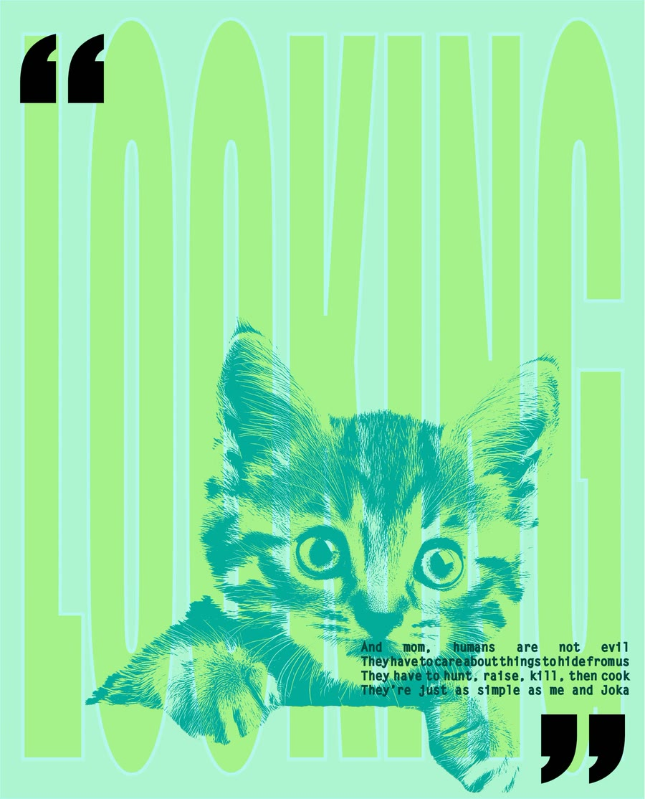

TRUNG THU
Mid-autumn festival poster — soft light, warm colour, a little astronaut for scale.

OCTOPUS IN THE DARK
Editorial poster study — a glowing silhouette, halftone texture, circular type running through it.

INTO THE FOREST
Soundtrack poster — a photo-composite of a fox mid-leap through forest god-rays, reaching for a small burning flower.

CƠM TẤM
Paper-collage food poster — Saigon landmarks torn from old newsprint, gathered around a plate of broken rice.

MADE IN VIETNAM
Product poster — gold type on lacquer red, with two pairs of chopsticks standing in for the letters they interrupt.

VÒNG XOÁY TUYỆT VỌNG
Environmental poster — Vietnam held inside a blackened globe, bound in chain, one smokestack still running.

LOOKING
Duotone type study — a kitten pushing out from behind oversized outlined letters, framed by heavy quote marks.